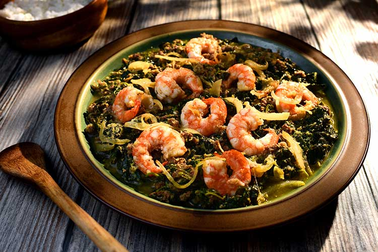

Home
Menu
About
Contact
CAMEROON'S TRADITIONAL MEALS AND PRICES

Ndolé
A flavorful dish made with bitterleaf, peanuts, and fish or meat.
$72.99
Poulet DG
A popular dish made with chicken, plantains, and vegetables, typically enjoyed during special occasions.
$94.99
Eru
A vegetable stew made with Eru leaves, accompanied by cocoyams and meat or fish.
$70.99
Achu
Pounded cocoyams served with spicy yellow soup and cow skin — a classic from the Western region.
$51.50
Koki
A savory steamed bean cake, often served with plantains or boiled yam.
$39.99
Bitterleaf Soup
A rich and hearty soup made from bitter leaves, typically served with pounded yam or rice.
$13.50
Porridge Corn and Beans
A comforting and nutritious dish made with corn and beans, often eaten for breakfast or as a light meal.
$47.50
Miondo
A traditional dish made from steamed cassava served with spicy fish or meat sauce.
$58.50